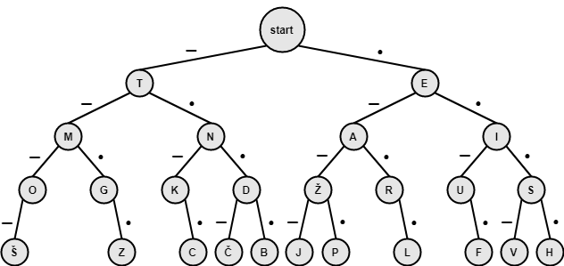
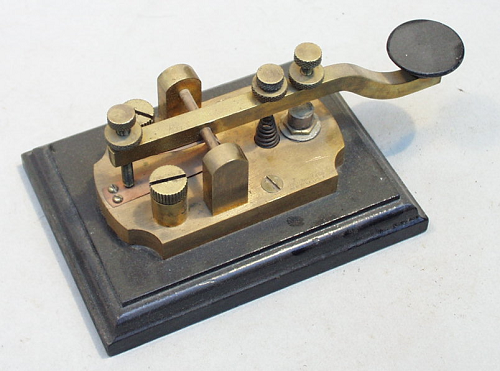
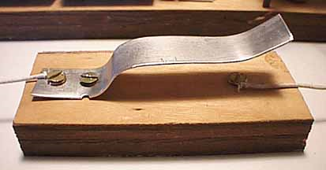

Licenca
To delo je na voljo pod pogoji slovenske licence Creative Commons 2.5:
priznanje avtorstva - nekomercialno - deljenje pod enakimi pogoji.
Celotna licenca je na voljo na spletu na naslovu http://creativecommons.org/licenses/by-nc-sa/2.5/si/. V skladu s to licenco je dovoljeno vsakemu uporabniku delo razmnoževati, distribuirati, javno priobčevati, dajati v najem in tudi predelovati, vendar samo v nekomercialne namene in ob pogoju, da navede avtorja oziroma avtorje in izdajatelja tega dela. Če uporabnik delo predela, kar pomeni, da ga spremeni, preoblikuje, prevede ali uporabi to delo v svojem delu, lahko predelavo dela ponudi na voljo le pod pogoji, ki so enaki pogojem iz te licence oziroma pod enako licenco.

Kaj je Morsejeva koda?
Morsejeva koda je kodiranje črk, številk in ločil s pomočjo kombinacije dolgih in kratkih signalov. Leta 1836 jo je razvil izumitelj telegrafa Samuel F. B. Morse s sodelavci. Morsejevo kodo uporabljamo za pošiljanje in sprejemanje besedilnih sporočil. Dolgi signal označujemo s črtico in izgovorimo »da«, kratki signal pa označujemo s piko in izgovorimo »di«.
Osnovni namen je bila komunikacija preko telegrafa, z izumom radia pa tudi za komunikacijo preko radijskih zvez. Prenos zvoka takrat še ni bil razvit, zato se je uporabljalo vklapljanje in izklapljanje oddajnika. Morsejevo kodo, kot sredstvo preproste komunikacije, še vedno uporabljajo taborniki in skavti saj jo je možno oddajati tudi z različnimi improviziranimi sredstvi (svetilka, piščalka, zrcalo, itd).
Mednarodna Morsejeva koda je zgodnja oblika digitalne komunikacije. Za razliko od današnje oblike digitalne komunikacije, ki uporablja samo dve stanji: izklopljeno ali vklopljeno (oziroma 0/1) ima Morsejeva koda pet stanj: pika, črtica, kratek presledek (med pikami in črticami posamezne črke), srednji presledek (med črkami) in dolg presledek (med besedami).
Morsejeva koda je oblika stiskanja podatkov, ki je podobna Huffmanovemu kodiranju. Od njega se razlikuje predvsem po tem, da Huffmanovo kodiranje ne vsebuje predpon (angl. prefix) kar pomeni, da zapis nobenega znaka ni predpona zapisa drugega znaka. Hitro lahko ugotoviš, da je pri Morsejevem kodiranju precej znakov, ki so predpone drugih znakov. Zato mora Morsejeva koda vsebovati presledke med črkami, besedami in stavki. Na spodnji sliki si oglej na primer zapis črke S, ki je predpona zapisov črk V in H:

Med prvo svetovno vojno (in še dolgo po njej) je bilo izmenjevanje sporočil s pomočjo Morsejeve kode glavna oblika radijske komunikacije. S pomočjo Maline jo lahko podoživiš tudi danes. Če imaš prednika, ki je bil nekdanji telegrafski operater ali vojak v prvi svetovni vojni, imaš na podstrešju morda staro Morsejevo tipko (angl. Morse key) oziroma taster, ki ga lahko uporabiš.

Če tasterja nimaš, si ga lahko – podobnega tistemu na spodnji sliki – narediš sam. Pri projektu pa bomo namesto tasterja uporabljali običajen pritisni gumb (angl. tactile switch).
